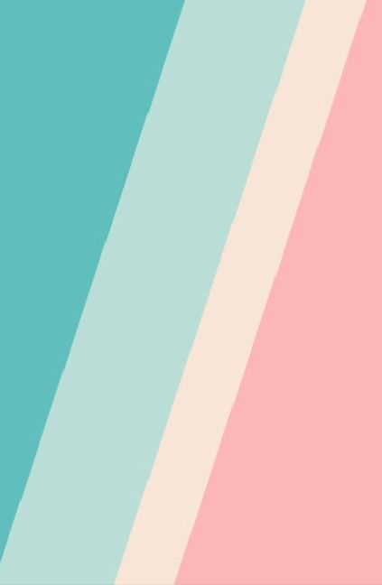

Creating a timeless look, coupled with a flawless moment

portfolio project
Come and visit us:
Creating a timeless look, coupled with a flawless moment
Scroll down to see more...
Project proposal
Overview
Our project proposal is entitled Sustainable Waste Reduction: A proper way of
sanitation and alternative waste disposal. We aim to establish a clear proposal in order to
help the community sustain its natural resources. Located at Barangay Bigaan, Bunsadan
Falls, a sought-after tourist destination known for its natural beauty. Despite its reputation
for its cleanliness, it is facing a serious problem of waste management. The increasing
number of visitors traveling from afar has led to a significant amount of waste being
generated, threatening the pristine environment of the falls.
Statement of the Problem
The Barangay Bigaan’s busadan falls is facing a major threat of environmental
degradation. Aside from natural calamities that fall under the place, human activities are
also the sole proprietor of this certain phenomenon. Ways like improper waste disposal,
kills the sanctity of the place. It is the main reason we decided on conducting this proposal
in order to save the place and help it get back to its old form. We see this case as somewhat
similar to what happened to the Pasig River; instead, we are working on saving a falls. If
proper waste disposal will not be regulated properly, the place will in no doubt end up like
the Pasig River. Based on the research we have conducted, there has been a previous
regulation of proper waste disposal management, and due to people's refusal to the law, it
resulted in having the place plugged by many unnecessary waste that could result in some
serious issues, like water degradation.
Furthermore, we have initiated some serious action, planning it based on the needs
of the place. With the fact that there has been a previous regulation of waste management,
we want to work our way to implement a newer protocol aligned with the knowledge we
have had and in hope that this might bring change to the diversity of the place, with good
impact in it.
Methodology
One of the things our group wants to aim for is having proper waste disposal. This is
not your ordinary waste disposal, but it is something we want to do by giving it a twist.
This waste management 2.0 should be expected to have a stern protocol than the previous
one. This just to ensure that changes may occur and the problem of improper waste
disposal will be mitigated.
And since it is an evolve version of the previous one, we are planning to put a twist on it.
Here are some lists of the changes that we want to implement if this given that our project
proposal is approved;
1. We aim to solicit from the people who regularly go to the falls. We will conduct what
we called, piso policy. In every trash that you have, you will hand it all to us, all
wrapped in a plastic bag, and in every plastic bag there will be an amount of 1 peso
in it. In this way, people will be engaged in picking up dirt, or even kids since there is
money involved.
2. An entrance fee of 5 peso to every person that will go there. This is to collect funds
that will sustain the utilities of the place.
3. Assuming we have allotted to a certain amount of money that funds will go to the
barangay, and the barangay will be the one to buy trash bins, and trash cans and
label them and distribute them all over the place.
The ways listed are our own way of idea to minimize the problem present in this area,
and on top of that, we want to help preserve the place not just for the people’s sake but as
well as the environment itself that is full of biodiversity.
Scope of the project
Sustainable reduction in sanitation and alternative waste disposal methods focuses on
minimizing the negative impact of waste generation and promoting sustainable practices. It
involves proper sanitation practices to ensure safe waste disposal, as well as alternative
waste disposal methods like recycling, composting, and waste reduction. The concept of a
circular economy is important, aiming to maximize resource efficiency, minimize waste generation, and promote reuse and recycling. Overall, sustainable reduction in sanitation
and waste disposal contributes to environmental conservation, resource management, and
long-term sustainability.
This project promotes resource conservation to reduce the strain on natural resources.
Contributes to environmental conservation and protects ecosystems to ensure safe waste
disposal and improves public health outcomes.
We see to it that proper waste disposal in Barangay Bigaan’s Busadan falls can be
implemented to reduce contamination and health hazards. This project aims to minimize
waste generation through responsible consumption and enable it to maintain its aesthetic.
We encourage the barangay to recycle and compost to recover valuable resources and
reduce reliance on virgin materials. It also aims to maintain the sanctity of the place itself.
This also helps prevent pollution of water by conserving natural resources, and mitigate
climate change through sustainable waste management practices.
Expected Outcomes of our project proposal:
1. The Improvement of Environmental Quality. To have a Cleaner and healthier water and
environment reducing pollution to minimize impact on Bigaan sanctuary.
2. Enhanced Public Health The reduction of waterborne diseases and the creation of a
healthier living environment especially for the people of Barangay Bigaan.
3. Transition to Circular Economy A shift towards a circular economy model, where waste
is seen as a resource and sustainable practices are incentivized.
Sustainable reduction in sanitation and alternative waste disposal methods aim to promote
resource conservation and minimize waste generation. Recycling and composting are
alternative waste disposal methods that help recover resources, reduce the need for raw
materials, and conserve energy. The objectives include safe waste disposal, waste
minimization, resource recovery, and environmental protection.
The expected outcomes are improved environmental quality, resource conservation,
enhanced public health, and a transition to a circular economy. In summary, sustainable
reduction in sanitation and alternative waste disposal methods focus on resource conservation, safe waste disposal, waste minimization, and environmental protection. The
expected outcomes include a cleaner environment, resource conservation, improved public
health and a shift towards a circular economy.
Timeline
Our future plans involve implementing stricter protocol upon the place and for that
to do so we aim to distribute as many garbage bins as we can all over the place. And we also
aim to teach the people, especially little children about proper waste management
ourselves, to rather ensure a better outcome for the place. Assuming this will be
implemented, we would like that our proposal will be introduced widely to the barangay. It
is important that the local residents are involved so that they as well can monitor what is
going on in the place and how they can prevent improper waste management if it happens.
It is a now or never case implementation and we want it to be implemented as soon as
possible because of the undying number of waste and due to people lurking the place. We
also decided that we aim for the place to have a scheduled time. Tuesdays to Saturdays it is
open to public, but for Mondays, it will be the time for the nearby residents, or any
barangay members lead by the barangay captain to clean up, and restore the place.
Evaluation
Our plan includes regular assessment to measure progress towards our goals,
gathering feedback from the barangay and its people, analyzing data, and making informed
decisions to improve our future plans. We will include posters, distributed to the different
sides of the falls and even outside as a reminder of all the protocols and policies.
Read More